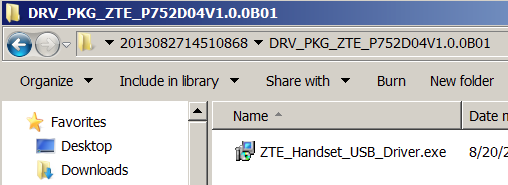
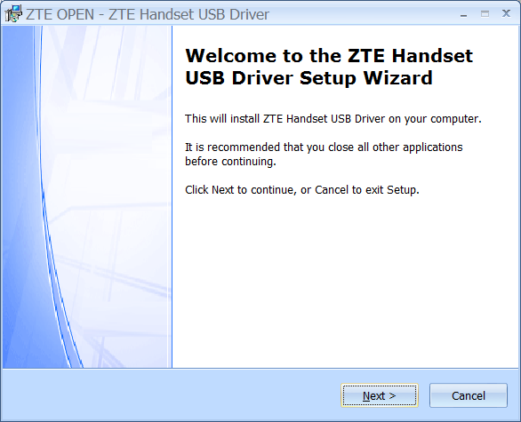

中興通訊 (ZTE) 針對開發者與初期使用者，發表了 Firefox OS 行動電話 ─ ZTE Open。本篇文章將說明應如何設定桌面環境並連接手機，再透過 Firefox OS 模擬器 (Firefox OS Simulator) 將 Apps 送進 ZTE Open。
設定 ZTE Open
在將 Apps 送進 ZTE Open，或對 ZTE Open 內的 Apps 進行除錯之前，都必須先啟動手機上的遠端除錯 (Remote debugging) 功能。請進入手機的「Settings」App 再點選 Device information -> More Information -> Developer -> Remote debugging 即可。

Windows 系統
若要在 Windows 系統中銜接模擬器與 ZTE Open，則需要特定的 USB 驅動程式。ZTE Open 手機已內建了執行檔，可安裝正確的驅動程式。另可透過中興通訊的鏈結下載此執行檔。
先將 Zip 壓縮檔下載至自己熟悉的路徑之後並解壓縮，接著以隨附的 USB 纜線銜接手機與電腦，最後執行資料夾中的「ZTE_Handset_USB_Driver.exe」可執行檔。

依照設定精靈的步驟安裝驅動程式即可。

驅動程式安裝完畢，就能將 Apps 送進手機了。你亦可透過 Windows 的「裝置管理員」確認是否安裝妥善。列於「Android Phone」之下的「ZTE Kernel Debug Interface」就是 ZTE 手機。

啟動 Firefox OS 模擬器，可看到 Dashboard 顯示「Push」按鈕與「Device connected」的訊息。

現在即可將自己的 Firefox OS Apps 添增至模擬器中，並以「Push」按鈕將 Apps 送進手機之中。
Linux 系統
若你是在 Linux 平台上開發 Apps，則必須新增 udev 規則才能銜接 ZTE Open 手機。請參閱 Android 開發文件《Setting up a Device for Development》並完成其中的 3.a 與 3.b 步驟。ZTE Open 會將「19d2」作為 idVendor 屬性。該項規則如下所示：
SUBSYSTEM==”usb”, ATTR{idVendor}==”19d2”, MODE=”0666”, GROUP=”plugdev”
1
SUBSYSTEM==”usb”, ATTR{idVendor}==”19d2”, MODE=”0666”, GROUP=”plugdev”
完成上述變更之後，請重新啟動系統或 udev 服務：
sudo service udev restart
1
sudo service udev restart
如果模擬器的 Dashboard 並未出現「Push」按鈕，則請參閱此篇問題回報。
Mac 系統
如果你是在 Mac 上執行模擬器，則不需額外設定即可啟動「Push」按鈕。
參考資料
若要透過模擬器將 Apps 送進裝置或除錯，可先參閱《 Firefox OS 模擬器》內的相關資訊。
原文鏈結：https://hacks.mozilla.org/2013/08/pushing-a-firefox-os-web-app-to-zte-open-phone/